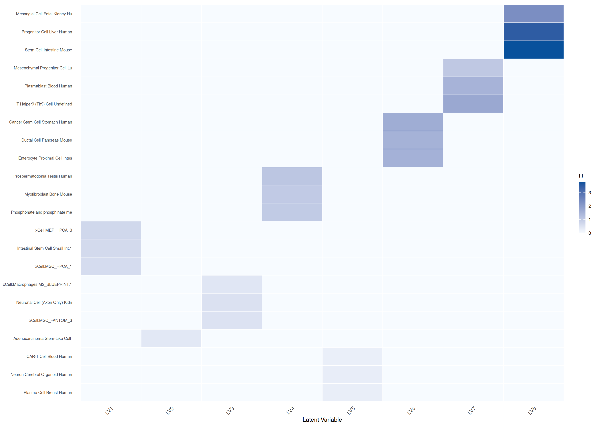
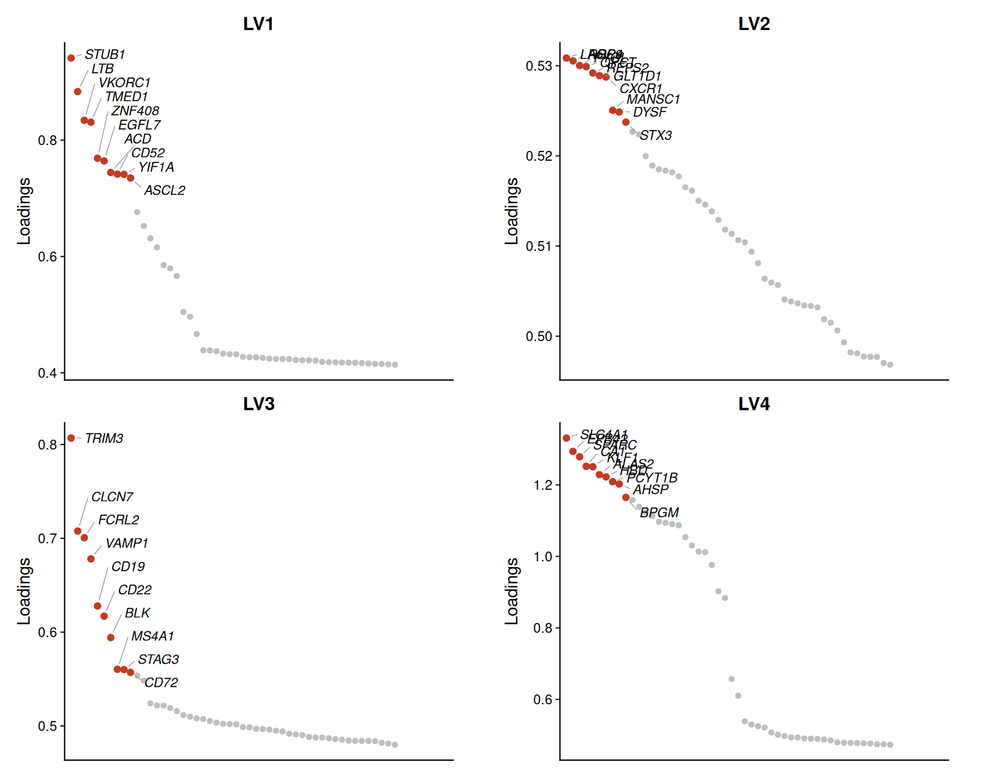
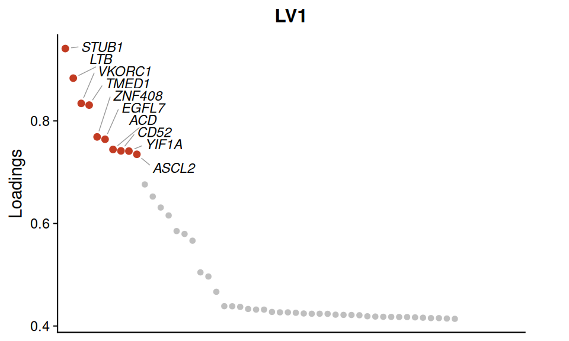
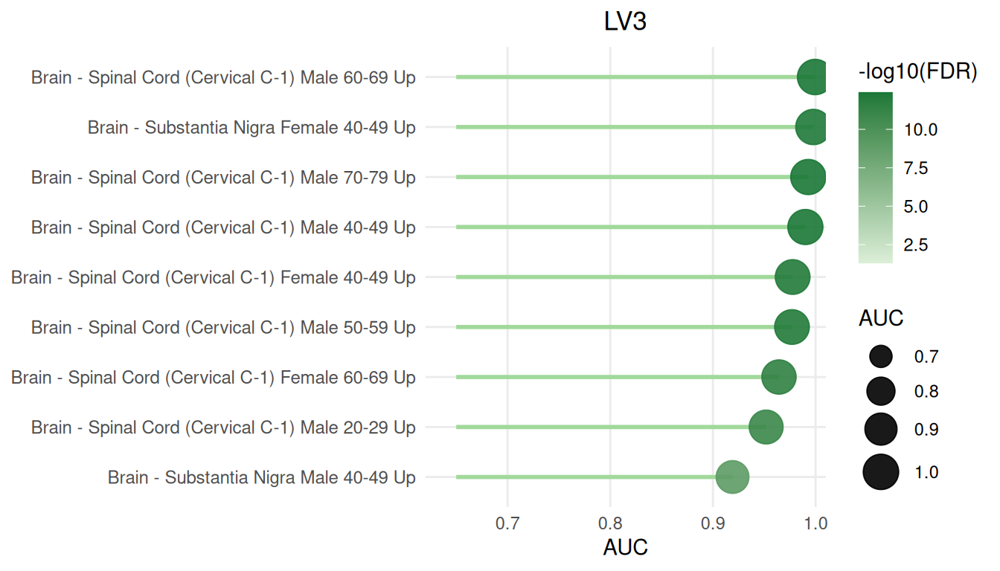
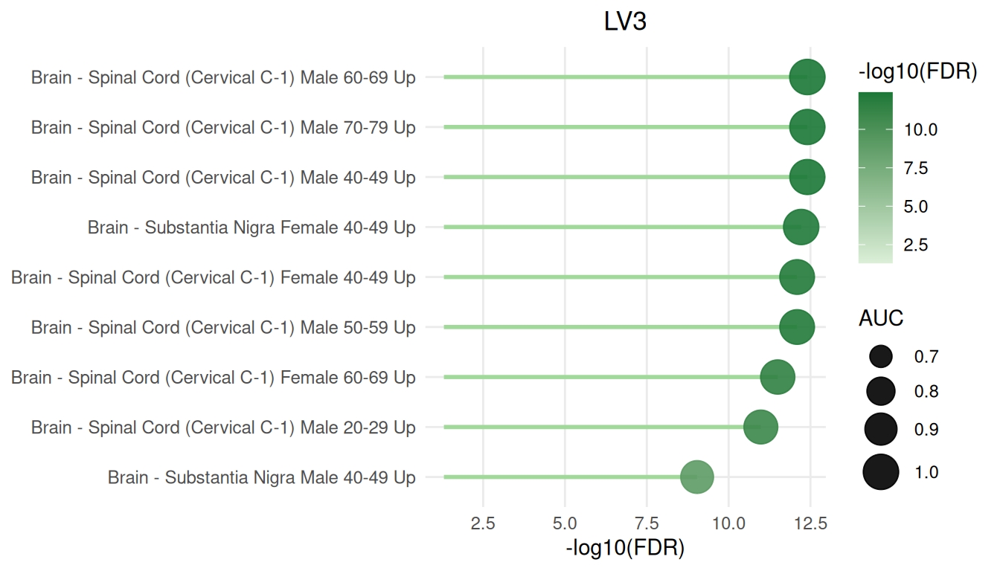
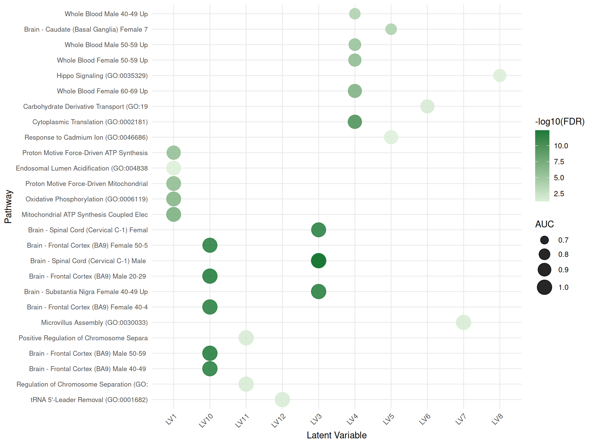

Analyzing human RNA-Seq data with CLAMP
Marc Subirana-Granés
Source:vignettes/get_started.Rmd
get_started.Rmd
Installation
Install the released version of CLAMP from Bioconductor:
if (!requireNamespace("BiocManager", quietly = TRUE)) {
install.packages("BiocManager")
}
BiocManager::install("CLAMP")The development version can be installed from GitHub:
BiocManager::install("chikinalab/CLAMP")Introduction
The CLAMP (Curated Latent-variable Analysis with Molecular Priors) package provides a two-stage framework to extract interpretable latent variables from high-dimensional transcriptomic data. It combines a standard matrix decomposition (CLAMPbase) with pathway-guided factor refinement (CLAMPfull), enabling:
-
Dimensionality reduction of gene expression
matrices
-
Incorporation of prior knowledge (e.g., Gene
Ontology or MSigDB)
-
Adaptive regularization of gene weights based on
their agreement with pathway priors
- Cross-validation to select robust latent variables
In CLAMPfull, pathway information is integrated through an adaptive
variance prior that dynamically modulates the
contribution of each gene according to how well its latent signal aligns
with pathway predictions. This mechanism allows CLAMP to emphasize
biologically consistent genes while maintaining flexibility to discover
novel, data-driven components.
By combining prior-guided regularization with scalable matrix updates,
CLAMPfull produces interpretable latent variables that capture both
known and emergent biological processes across large transcriptomic
datasets.
Quick Start
Available datasets
CLAMPData ships three curated datasets used throughout this vignette.
You can inspect them with list_clamp_data():
list_clamp_data()
#> name accessor
#> 1 GSE164416_DP_htseq_counts_txt_gz GSE164416_DP_htseq_counts_txt_gz
#> 2 human_gene_v2_5_alz_h5 human_gene_v2_5_alz_h5
#> 3 islets_metadata_csv islets_metadata_csv
#> description type
#> 1 HTSeq-counts (gene-level) text file from GSE164416 for CLAMP examples. TXT.gz
#> 2 HDF5 file used in CLAMP vignettes (human_gene_v2.5_alz.h5). HDF5
#> 3 Sample metadata table for islet RNA-seq example (CLAMP). CSV
#> species eh_id version
#> 1 Homo sapiens EH10279 v1
#> 2 Homo sapiens EH10280 v1
#> 3 Homo sapiens EH10281 v1We provide three examples:
Data-frame example (whole blood):
A small dataset loaded entirely into memory. Shows basic preprocessing, z-scoring, and running CLAMP without on-disk storage.HDF5 example (Alzheimer’s brain):
Demonstrates how to import expression from an HDF5 file, create a file-backed FBM object, and process larger datasets using the FBM interface.Table example (pancreatic islets):
Illustrates reading a tab-delimited count file and comparing conditions via the B matrix.
Each example follows these steps:
- Load & preprocess data (filter by mean/variance, then z-score).
-
Compute SVD and infer the model dimension
k. -
Prepare pathway annotations via
getGMT()and construct the prior matrix. -
Run CLAMPbase with the pre-computed SVD result and
kto initialize the latent variables. - Run CLAMPfull to refine latent variables using pathway priors and variance-adaptive regularization, producing the final model and summary statistics.
Computing the SVD and inferring k
CLAMP requires a truncated Singular Value Decomposition (SVD) of the z-scored expression matrix as input. The choice of SVD function depends on dataset size:
Small to medium datasets (in-memory): Use
rsvd::rsvd()from the rsvd package. This is efficient for matrices that fit comfortably in RAM.Large datasets (file-backed): Use
bigstatsr::big_randomSVD()for file-backed matrices (FBM). This function computes the SVD without loading the entire matrix into memory, enabling analysis of datasets too large for RAM.
After computing the SVD, infer the optimal number of latent variables
(clamp_k) using num.pc():
Example 1: In-memory data.frame (Whole Blood)
This example uses whole-blood RNA-seq data available from GEO under accession GSE130824 (Homo sapiens, 36 samples). It demonstrates the standard in-memory CLAMP workflow for bulk transcriptomic data from peripheral blood.
Load example data
In this chunk, we load the whole-blood expression matrix.
data("dataWholeBlood") # expression matrix
dim(dataWholeBlood) # genes x samples
#> [1] 11530 36
dataWholeBlood[1:6, 1:6] # genes x samples
#> BD8001 BD8002 BD8003 BD8004 BD8005 BD8006
#> GAS6 7.123563 7.846633 8.356313 7.387916 7.859675 7.057541
#> MMP14 6.636157 7.523565 7.033673 6.895476 6.860524 7.268107
#> MARCKSL1 10.632837 11.208832 10.519870 10.804867 10.940891 10.984602
#> SPARC 12.206811 11.462327 12.391210 12.457026 12.036049 12.010138
#> CTSD 13.147963 13.218464 12.574546 12.710222 13.151780 13.131948
#> EPAS1 7.011590 6.196898 6.621782 7.251964 6.792337 6.813567Preprocess and z-score
The bundled whole-blood matrix already contains normalized expression values. We use these values directly, disable log2 transformation, filter for genes with mean expression ≥ 0.5 and variance ≥ 0.1, and then apply z-score normalization. CPM normalization is appropriate for raw counts.
# Filter the normalized expression values and compute row statistics
prep_wb <- preprocessCLAMP(
Y = dataWholeBlood,
mean_cutoff = 0.5,
var_cutoff = 0.1,
log2_transform = FALSE
)
#> Skipping log2 transformation
#> No NA values found
# Extract filtered matrix and rowStats
wb_Y_filtered <- prep_wb$Y_filtered
wb_rowStats <- prep_wb$rowStats
# Z-score normalization
wb_Y_z <- zscoreCLAMP(
Y_filtered = wb_Y_filtered,
rowStats = wb_rowStats
)Compute SVD and infer k
We compute the SVD using select_svd_k() and
compute_svd(), then select clamp_k with
select_clamp_k().
# Select SVD rank and compute SVD
wb_svd_k <- select_svd_k(wb_Y_z)
wb_svd <- compute_svd(wb_Y_z, k = wb_svd_k)
# Select clamp_k (elbow method by default)
wb_clamp_k <- select_clamp_k(wb_svd, n_samples = ncol(wb_Y_z), svd_k = wb_svd_k)
wb_clamp_k
#> [1] 8CLAMPbase initialization
We initialize latent variables using CLAMPbase,
providing the pre-computed SVD and inferred k.
The argument adaptive.p defines the percentile used to
determine the adaptive sparsity threshold applied to each latent
variable’s gene loadings. During alternating updates, negative entries
in Z are treated as noise, and CLAMP estimates a cutoff
based on the adaptive.p quantile of these negative values.
All genes with loadings below this cutoff are set to zero.
This produces data-driven sparsity, automatically
filtering weak or noisy signals while retaining genes with the strongest
positive contributions. Lower values of adaptive.p (e.g.,
0.01) result in stronger sparsity, while higher values (e.g., 0.1)
retain more genes. The default adaptive.p = 0.05 typically
yields interpretable, well-separated latent variables in large
transcriptomic datasets.
wb_baseRes <- CLAMPbase(
Y = wb_Y_z,
svdres = wb_svd,
clamp_k = wb_clamp_k
)Prepare pathway priors
Next, we build a prior matrix from curated gene sets and compute the
Chat object for CLAMPfull.
# How to download pathway and cell marker libraries from Enrichr.
# Not run during vignette build to avoid network calls; pre-fetched
# .rds files are loaded in the next chunk instead.
enrichr_url <- "https://maayanlab.cloud/Enrichr/geneSetLibrary"
gmtList <- list(
CellMarkers = getGMT(
paste0(enrichr_url, "?mode=text&libraryName=CellMarker_2024"),
"CellMarker_2024"
),
KEGG = getGMT(
paste0(enrichr_url, "?mode=text&libraryName=KEGG_2021_Human"),
"KEGG_2021_Human"
)
)
# Load pre-fetched gene set libraries bundled with the package
gmtList <- list(
CellMarkers = readRDS(
system.file("extdata", "CellMarker_2024.rds", package = "CLAMP")
),
KEGG = readRDS(
system.file("extdata", "KEGG_2021_Human.rds", package = "CLAMP")
)
)
# Combine into a single sparse matrix
pathMatCell <- gmtListToSparseMat(gmtList)
# Load additional xCell reference matrix
data("xCell")
# Match pathways to the gene space of whole blood
matchedPathsWB <- getMatchedPathwayMatList(
pathMatCell, xCell,
new.genes = rownames(dataWholeBlood),
min.genes = 2
)Note: GMT files can also be loaded from local
storage using read_gmt(). This allows you to integrate
custom or curated gene set libraries, such as MSigDB canonical
pathways, directly into your analysis pipeline alongside remote
resources.
CLAMPfull
Finally, we refine the base model by integrating pathway priors using
CLAMPfull, which applies cross-validation to optimize
latent variable regularization. In this new version,
CLAMPfull incorporates variable priors
that adjust the influence of each pathway adaptively, improving
convergence and stability across heterogeneous datasets.
wb_fullRes <- CLAMPfull(
wb_Y_z,
priorMat = matchedPathsWB,
clamp.base.result = wb_baseRes,
svdres = wb_svd,
clamp_k = wb_clamp_k,
use_cpp = TRUE
)Display significant latent variables
# Display significant latent variables
wb_summary_df <- as.data.frame(wb_fullRes$summary) %>%
dplyr::filter(FDR < 0.05 & AUC > 0.7) %>%
dplyr::arrange(FDR) %>%
dplyr::select(LV, pathway, FDR, AUC)
datatable(
wb_summary_df,
filter = "top",
options = list(
pageLength = 10,
autoWidth = TRUE
),
rownames = FALSE,
class = "stripe hover compact"
) %>%
formatSignif(c("AUC", "FDR"), 3)The recovered LVs are biologically coherent for whole blood. LV13 aligns with neutrophil signatures, LV10 with platelets, LV14 with erythrocytes, LV12 with NK cells, and LV11 with plasma cells, covering the major cellular constituents of whole blood. Together, these results indicate that CLAMP successfully decomposes the bulk transcriptomic signal into its dominant blood-cell-type components.
Example 2: File-Backed Matrix (Alzheimer’s Brain)
This example uses data from Alzheimer’s brain samples from a Neurobiology of Disease study (Barbash et al., 2017; DOI: https://doi.org/10.1016/j.nbd.2017.06.008). It demonstrates the on‑disk workflow with a file‑backed FBM to handle large‑scale transcriptomic datasets.
Cleanup old FBM files
output_dir <- here("output", "alzFBM")
fbm_base <- file.path(output_dir, "FBMalz")
bk_paths <- paste0(fbm_base, c(".bk", "_preproc.bk", "_preproc_filtered.bk"))
file.remove(bk_paths[file.exists(bk_paths)])
#> logical(0)Computing CPM on a File-Backed Matrix (FBM)
For file-backed matrices (FBMs), you can compute counts-per-million
(CPM) in-place—without loading the entire dataset into RAM—using the
cpmCLAMPFBM() function from CLAMP:
HDF5 schema
CLAMP HDF5 files follow a fixed layout. You can inspect the expected
structure with clamp_h5_schema():
clamp_h5_schema()
#> path type
#> 1 /data/expression matrix (samples x genes)
#> 2 /meta/genes/symbol character
#> 3 /meta/samples/geo_accession character
#> description
#> 1 Expression matrix; transposed to genes x samples at load
#> 2 Gene symbols, length = n_genes
#> 3 Sample identifiers, length = n_samplesLoad HDF5 expression
read_clamp_alz_expression() downloads the file via
ExperimentHub, validates it against the schema, and returns a genes ×
samples matrix with row and column names ready to use.
expr_mat <- read_clamp_alz_expression()
genes <- rownames(expr_mat)Construct file‑backed FBM
dir.create(output_dir, recursive = TRUE, showWarnings = FALSE)
alzFBM <- FBM(
nrow = nrow(expr_mat), ncol = ncol(expr_mat),
backingfile = fbm_base
)
blk <- 1000
for (i in seq_len(ceiling(nrow(expr_mat) / blk))) {
rows <- ((i - 1) * blk + 1):min(i * blk, nrow(expr_mat))
alzFBM[rows, ] <- expr_mat[rows, , drop = FALSE]
}CPM, preprocess and z‑score FBM
prep_alz <- preprocessCLAMPFBM(
fbm = alzFBM,
mean_cutoff = 0.5,
var_cutoff = 0.1
)
alz_fbm_filt <- prep_alz$fbm_filtered
alz_rowStats <- prep_alz$rowStats
zscoreCLAMPFBM(alz_fbm_filt, alz_rowStats)
alz_genes <- genes[prep_alz$kept_rows]Compute SVD and infer k
For file-backed matrices, compute_svd() dispatches to
bigstatsr::big_SVD() automatically, avoiding loading the
entire matrix into RAM.
# Select SVD rank and compute SVD (dispatches to bigstatsr for FBM)
alz_svd_k <- select_svd_k(alz_fbm_filt)
alz_svd <- compute_svd(alz_fbm_filt, k = alz_svd_k)
# Select clamp_k (elbow method by default)
alz_clamp_k <- select_clamp_k(alz_svd, n_samples = ncol(alz_fbm_filt),
svd_k = alz_svd_k)
alz_clamp_k
#> [1] 13CLAMPbase
alz_baseRes <- CLAMPbase(
Y = alz_fbm_filt,
svdres = alz_svd,
clamp_k = alz_clamp_k
)Prepare pathway priors
# How to fetch the libraries; not run during vignette build.
enrichr_url <- "https://maayanlab.cloud/Enrichr/geneSetLibrary"
alz_gmtList <- list(
GTEx_Tissues = getGMT(
paste0(enrichr_url, "?mode=text&libraryName=GTEx_Tissues_V8_2023")
),
BP = getGMT(
paste0(enrichr_url, "?mode=text&libraryName=GO_Biological_Process_2025")
),
MSigDB = getGMT(
paste0(enrichr_url, "?mode=text&libraryName=MSigDB_Hallmark_2020")
)
)
alz_gmtList <- list(
GTEx_Tissues = readRDS(
system.file("extdata", "GTEx_Tissues_V8_2023.rds", package = "CLAMP")
),
BP = readRDS(
system.file(
"extdata", "GO_Biological_Process_2025.rds",
package = "CLAMP"
)
),
MSigDB = readRDS(
system.file("extdata", "MSigDB_Hallmark_2020.rds", package = "CLAMP")
)
)
alz_pathMat <- gmtListToSparseMat(alz_gmtList)
alz_matched <- getMatchedPathwayMat(alz_pathMat, alz_genes)CLAMPfull
alz_fullRes <- CLAMPfull(
alz_fbm_filt,
priorMat = alz_matched,
clamp.base.result = alz_baseRes,
svdres = alz_svd,
clamp_k = alz_clamp_k,
use_cpp = TRUE
)Display significant latent variables
alz_summary_df <- as.data.frame(alz_fullRes$summary) %>%
dplyr::filter(FDR < 0.05 & AUC > 0.7) %>%
dplyr::arrange(FDR) %>%
dplyr::select(LV, pathway, FDR, AUC)
datatable(
alz_summary_df,
filter = "top",
options = list(
pageLength = 10,
autoWidth = TRUE
),
rownames = FALSE,
class = "stripe hover compact"
) %>%
formatSignif(c("AUC", "FDR"), 3)The significant LVs align with brain-relevant transcriptional programs implicated in Alzheimer’s disease. LV3 and LV10 are enriched for GTEx brain-region signatures, including spinal cord, substantia nigra, frontal cortex, and cortex, suggesting that these axes capture genuine neural transcriptional variation. LV1 further supports disease relevance through enrichment for mitochondrial respiration and oxidative phosphorylation pathways, which are linked to impaired brain energy metabolism in Alzheimer’s disease.
Example 3: Tab-Delimited Count File (Pancreatic Islets)
In this example, we apply the in‑memory CLAMP workflow to RNA‑Seq count data from GEO accession GSE164416 (Wigger et al. 2021; “Multi‑omics profiling of living human pancreatic islet donors reveals heterogeneous beta-cell trajectories towards type 2 diabetes”, DOI: 10.1038/s42255-021-00420-9). After preprocessing the raw counts and fitting the CLAMP model, we perform a differential analysis of latent‑variable activities to compare non‑diabetic (ND) and type 2 diabetic (T2D) samples.
Load count data and map gene symbols
islet_df <- read_islet_counts()
islet_df$symbol <- mapIds(org.Hs.eg.db,
keys = islet_df$ensembl,
column = "SYMBOL",
keytype = "ENSEMBL",
multiVals = "first"
)
islet_df <- islet_df[!is.na(islet_df$symbol), ]CPM, preprocess and z-score
prep_is <- preprocessCLAMP(
Y = expr,
mean_cutoff = 0.5,
var_cutoff = 0.1
)
iso_Yf <- prep_is$Y_filtered
iso_rowS <- prep_is$rowStats
iso_Yz <- zscoreCLAMP(
Y_filtered = iso_Yf,
rowStats = iso_rowS
)Compute SVD and infer k
# Select SVD rank and compute SVD
islet_svd_k <- select_svd_k(iso_Yz)
islet_svd <- compute_svd(iso_Yz, k = islet_svd_k)
# Select clamp_k (elbow method by default)
islet_clamp_k <- select_clamp_k(islet_svd, n_samples = ncol(iso_Yz),
svd_k = islet_svd_k)
islet_clamp_k
#> [1] 33CLAMPbase
islet_baseRes <- CLAMPbase(
Y = iso_Yz,
svdres = islet_svd,
clamp_k = islet_clamp_k
)Prepare pathway priors
# How to fetch the libraries; not run during vignette build.
enrichr_url <- "https://maayanlab.cloud/Enrichr/geneSetLibrary"
islet_gmtList <- list(
GTEx_Tissues = getGMT(
paste0(enrichr_url, "?mode=text&libraryName=GTEx_Tissues_V8_2023")
),
Diabetes_Perturbations = getGMT(
paste0(
enrichr_url,
"?mode=text&libraryName=Diabetes_Perturbations_GEO_2022"
)
),
MSigDB_Hallmark = getGMT(
paste0(enrichr_url, "?mode=text&libraryName=MSigDB_Hallmark_2020")
)
)
islet_gmtList <- list(
GTEx_Tissues = readRDS(
system.file("extdata", "GTEx_Tissues_V8_2023.rds", package = "CLAMP")
),
Diabetes_Perturbations = readRDS(
system.file(
"extdata", "Diabetes_Perturbations_GEO_2022.rds",
package = "CLAMP"
)
),
MSigDB_Hallmark = readRDS(
system.file("extdata", "MSigDB_Hallmark_2020.rds", package = "CLAMP")
)
)
islet_pathMat <- gmtListToSparseMat(islet_gmtList)
islet_matched <- getMatchedPathwayMat(islet_pathMat, rownames(iso_Yz))
islet_chatObj <- getChat(islet_matched)CLAMPfull
islet_fullRes <- CLAMPfull(
iso_Yz,
priorMat = islet_matched,
clamp.base.result = islet_baseRes,
svdres = islet_svd,
clamp_k = islet_clamp_k,
use_cpp = TRUE
)Display significant latent variables
islet_summary_df <- as.data.frame(islet_fullRes$summary) %>%
dplyr::filter(FDR < 0.05 & AUC > 0.7) %>%
dplyr::arrange(FDR) %>%
dplyr::select(LV, pathway, FDR, AUC)
datatable(
islet_summary_df,
filter = "top",
options = list(
pageLength = 10,
autoWidth = TRUE
),
rownames = FALSE,
class = "stripe hover compact"
) %>%
formatSignif(c("AUC", "FDR"), 3)The significant LVs reflect key biological processes relevant to type 2 diabetes. LV20 and LV16 capture alpha- and beta-cell identity programs, highlighting pancreatic islet endocrine biology. LV21 aligns with pancreas-specific GTEx tissue signatures, supporting tissue relevance, while LV1 captures oxidative phosphorylation, protein secretion, and beta-cell-related programs.
Differential latent-variable expression between conditions
Rows of the B matrix correspond to LVs and columns to samples. By
grouping samples by condition (ND vs T2D),
differentialLVActivity() computes average LV expression per
group and tests for LVs that differ between healthy and diabetic
islets.
islet_metadata <- read_islet_metadata()
lv_stats_all_vs_nd <- differentialLVActivity(
islet_fullRes,
metadata = islet_metadata,
sample_col = "id",
group_col = "type",
reference = "ND"
)
sig_lv_all_vs_nd <- lv_stats_all_vs_nd %>%
dplyr::filter(FDR < 0.1)
sig_pathway <- islet_summary_df %>%
dplyr::filter(FDR < 0.05 & AUC > 0.7) %>%
dplyr::filter(LV %in% sig_lv_all_vs_nd$LV) %>%
dplyr::arrange(FDR) %>%
dplyr::select(LV, pathway, FDR, AUC)
datatable(
sig_pathway,
filter = "top",
options = list(
pageLength = 10,
autoWidth = TRUE
),
rownames = FALSE,
class = "stripe hover compact"
) %>%
formatSignif(c("AUC", "FDR"), 3)The top differentially active LVs highlight biological axes distinguishing T2D from ND islets. LV7 links to diabetic adipose tissue and TNF-alpha signaling via NF-kB, consistent with inflammation and metabolic dysfunction. LV20 and LV16 map to alpha- and beta-cell programs. LV9 and LV3 are associated with islet perturbation and diabetic mouse islet signatures, supporting disease-relevant changes in islet transcriptional states, while LV10 suggests a vascular component relevant to T2D.
Projection: Applying one CLAMP model to another dataset
projectCLAMP() reuses the gene loadings
(Z) from a fitted CLAMP model and estimates
latent-variable activities (B) for a new expression
matrix. Projection uses the same genes in the same order; when both
matrices have row names, projectCLAMP() aligns the common
genes automatically before solving for B.
Here we project the whole-blood expression matrix from Example 1 into the full latent-variable space learned from the pancreatic islet model in Example 3.
islet_model_genes <- rownames(islet_fullRes$Z)
wb_project_genes <- rownames(wb_Y_z)
common_genes <- intersect(islet_model_genes, wb_project_genes)
cat(
"Overlapping genes:", length(common_genes), "/", length(islet_model_genes),
"islet model genes",
sprintf(
"(%.1f%%)\n",
100 * length(common_genes) / length(islet_model_genes)
)
)
#> Overlapping genes: 4981 / 21468 islet model genes (23.2%)
# projectCLAMP aligns common row names in the model's gene order
wb_projected_B <- projectCLAMP(islet_fullRes, wb_Y_z)
#> 4981 common rows found
dim(wb_projected_B)
#> [1] 33 36
wb_projected_B[
seq_len(min(5, nrow(wb_projected_B))),
seq_len(min(5, ncol(wb_projected_B))),
drop = FALSE
]
#> BD8001 BD8002 BD8003 BD8004 BD8005
#> LV1 0.95004450 0.63170334 1.00571029 1.81556060 0.31553056
#> LV2 0.06781266 -0.26392546 0.48274887 0.02568273 -0.08804136
#> LV3 0.09877356 -0.01672994 -0.23388281 0.28445566 0.07248089
#> LV4 -0.01471986 -0.02594451 -0.01194201 -0.07121156 -0.01116246
#> LV5 -0.59836163 -0.32449826 -0.44044890 -1.11078262 -0.14900108Choosing the Number of Latent Variables (CLAMP_K)
CLAMP_K controls how many latent variables the model learns. Too few
and biologically distinct signals merge; too many and noise is absorbed
into spurious components. select_clamp_k() is the unified
interface: it takes the SVD result, the number of samples, the SVD
truncation rank, and an optional method argument, and
returns a list with $clamp_k (number of LVs) and
$scale (regularization scale used downstream).
Elbow method (default)
The elbow heuristic fits a smoothing spline to the singular-value scree plot and returns the index at which curvature is maximised. This is the fastest option and works well when the signal-to-noise boundary is clear.
select_clamp_k(
wb_svd,
n_samples = ncol(wb_Y_z),
svd_k = wb_svd_k,
method = "elbow"
)
#> [1] 8Permutation method
The permutation approach shuffles each row of the input matrix
independently B times and recomputes the SVD to build a
null distribution of singular values. The number of components whose
observed singular value exceeds the 95th percentile of the null is
returned. This is more conservative and slower, but robust to smooth
scree plots.
select_clamp_k(
wb_svd,
n_samples = ncol(wb_Y_z),
svd_k = wb_svd_k,
method = "permutation",
data = wb_Y_z,
B = 2
)Gavish–Donoho optimal hard threshold (PCAtools)
The Gavish–Donoho threshold (Gavish & Donoho, 2014) identifies
the singular-value cutoff below which components are statistically
indistinguishable from noise, given matrix dimensions and an estimate of
the noise level. PCAtools implements this via
chooseGavishDonoho().
select_clamp_k(
wb_svd,
n_samples = ncol(wb_Y_z),
svd_k = wb_svd_k,
method = "gavish_donoho",
data = wb_Y_z
)Visualization
CLAMP provides dedicated plotting functions built on
ggplot2, prefixed CLAMPplot or
CLAMPdotplot. The heatmap and gene-loading plots use the
whole-blood result wb_fullRes computed in Example 1. The
pathway dot plots use the Alzheimer’s result alz_fullRes,
which contains associations passing the displayed AUC and FDR
thresholds.
Pathway–LV association heatmap (CLAMPplotU)
CLAMPplotU displays the pathway loading matrix
U after filtering by AUC and FDR. Only the
top-top pathways per LV are shown, making it easy to scan
which pathways drive each latent variable. This overview uses permissive
cutoffs so it remains populated across reproducible vignette builds; use
more selective cutoffs for an analysis-specific figure.
CLAMPplotU(
wb_fullRes,
auc.cutoff = 0,
fdr.cutoff = 1,
top = 3
)
Top-gene loading plot (CLAMPplotTopZ)
CLAMPplotTopZ ranks genes by their Z loading for each
selected LV and plots the top genes as loading-versus-rank scatter
plots. The highest-loading genes are labelled directly.
# Use the first few LVs that have pathway support
lv_with_paths <- wb_fullRes$withPrior[
seq_len(min(4, length(wb_fullRes$withPrior)))
]
CLAMPplotTopZ(
wb_fullRes,
top = 50,
label.top = 10,
index = lv_with_paths
)
Only one LV:
# Use the first LV that has pathway support
lv_with_paths <- wb_fullRes$withPrior[1]
CLAMPplotTopZ(
wb_fullRes,
top = 50,
label.top = 10,
index = lv_with_paths
)
Single-LV pathway dot plot (CLAMPdotplot)
CLAMPdotplot shows the top pathways for one selected LV
as a lollipop chart. Dot size encodes AUC; dot colour encodes
-log10(FDR). Use x.axis and
order.by to choose whether the x-axis and pathway ranking
use AUC or -log10(FDR).
Plot order by AUC:
CLAMPdotplot(
alz_fullRes,
lv = "LV3",
top = 15,
auc.cutoff = 0.65,
fdr.cutoff = 0.05,
x.axis = "AUC",
order.by = "AUC"
)
Plot order by FDR:
CLAMPdotplot(
alz_fullRes,
lv = "LV3",
top = 15,
auc.cutoff = 0.65,
fdr.cutoff = 0.05,
x.axis = "-log10(FDR)",
order.by = "-log10(FDR)"
)
All-LV pathway dot plot (CLAMPdotplotAll)
CLAMPdotplotAll gives a compact overview of all
significant pathway–LV associations across every latent variable. Dot
size encodes AUC and dot colour encodes -log10(FDR).
CLAMPdotplotAll(
alz_fullRes,
auc.cutoff = 0.65,
fdr.cutoff = 0.05,
top.per.lv = 5
)
Parallelization in CLAMP
CLAMP supports multi-core parallelization for computationally
intensive operations, particularly when working with large datasets and
file-backed matrices (FBMs). The ncores parameter can be
used in several key functions to speed up processing.
The following CLAMP functions accept an ncores
parameter:
Session Information
sessionInfo()
#> R version 4.6.2 (2026-10-29)
#> Platform: x86_64-pc-linux-gnu
#> Running under: Ubuntu 26.04.1 LTS
#>
#> Matrix products: default
#> BLAS: /usr/lib/x86_64-linux-gnu/openblas-pthread/libblas.so.3
#> LAPACK: /usr/lib/x86_64-linux-gnu/openblas-pthread/libopenblasp-r0.3.32.so; LAPACK version 3.12.0
#>
#> locale:
#> [1] LC_CTYPE=C.UTF-8 LC_NUMERIC=C LC_TIME=C.UTF-8
#> [4] LC_COLLATE=C.UTF-8 LC_MONETARY=C.UTF-8 LC_MESSAGES=C.UTF-8
#> [7] LC_PAPER=C.UTF-8 LC_NAME=C LC_ADDRESS=C
#> [10] LC_TELEPHONE=C LC_MEASUREMENT=C.UTF-8 LC_IDENTIFICATION=C
#>
#> time zone: UTC
#> tzcode source: system (glibc)
#>
#> attached base packages:
#> [1] stats4 stats graphics grDevices utils datasets methods
#> [8] base
#>
#> other attached packages:
#> [1] DiagrammeR_1.0.12 DT_0.34.0 org.Hs.eg.db_3.24.6
#> [4] AnnotationDbi_1.75.2 IRanges_2.47.5 S4Vectors_0.51.10
#> [7] Biobase_2.73.2 BiocGenerics_0.59.13 generics_0.1.4
#> [10] here_1.0.2 bigstatsr_1.6.2 data.table_1.18.6.1
#> [13] rhdf5_2.57.20 glmnet_5.2 Matrix_1.7-6
#> [16] rsvd_2.0.0 dplyr_1.2.1 CLAMPData_0.99.5
#> [19] CLAMP_0.99.12 BiocStyle_2.41.0
#>
#> loaded via a namespace (and not attached):
#> [1] DBI_1.3.0 httr2_1.3.0 rlang_1.3.0
#> [4] magrittr_2.0.5 clue_0.3-68 GetoptLong_1.1.1
#> [7] otel_0.3.0 matrixStats_1.5.0 compiler_4.6.2
#> [10] RSQLite_3.53.3 png_0.1-9 systemfonts_1.3.3
#> [13] vctrs_0.7.3 pkgconfig_2.0.3 shape_1.4.6.1
#> [16] crayon_1.5.3 fastmap_1.2.0 XVector_0.53.0
#> [19] dbplyr_2.6.0 labeling_0.4.3 rmarkdown_2.32
#> [22] ps_1.9.3 ragg_1.5.2 purrr_1.2.2
#> [25] bit_4.6.0 xfun_0.62 cachem_1.1.0
#> [28] rmio_0.4.0 jsonlite_2.0.0 blob_1.3.0
#> [31] rhdf5filters_1.25.5 Rhdf5lib_2.1.0 irlba_2.4.1
#> [34] parallel_4.6.2 cluster_2.1.8.3 R6_2.6.1
#> [37] bslib_0.12.0 RColorBrewer_1.1-3 jquerylib_0.1.4
#> [40] Seqinfo_1.3.2 Rcpp_1.1.2 bookdown_0.48
#> [43] iterators_1.0.14 knitr_1.52 BiocBaseUtils_1.15.1
#> [46] splines_4.6.2 tidyselect_1.2.1 rstudioapi_0.19.0
#> [49] yaml_2.3.12 doParallel_1.0.17 codetools_0.2-20
#> [52] curl_8.1.0 lattice_0.23-1 tibble_3.3.1
#> [55] withr_3.0.3 KEGGREST_1.53.6 S7_1.0.0
#> [58] evaluate_1.0.5 desc_1.4.3 survival_3.8-12
#> [61] BiocFileCache_3.3.3 circlize_0.4.18 ExperimentHub_3.3.2
#> [64] Biostrings_2.81.9 pillar_1.11.1 BiocManager_1.30.27
#> [67] filelock_1.0.3 foreach_1.5.2 bigassertr_0.2.0
#> [70] rprojroot_2.1.1 BiocVersion_3.24.0 ggplot2_4.0.4
#> [73] scales_1.4.0 ff_4.5.3 glue_1.8.1
#> [76] tools_4.6.2 AnnotationHub_4.3.3 RSpectra_0.16-2
#> [79] visNetwork_2.1.4 fs_2.1.0 cowplot_1.2.0
#> [82] grid_4.6.2 crosstalk_1.2.2 colorspace_2.1-4
#> [85] patchwork_1.3.2 flock_0.7 cli_3.6.6
#> [88] rappdirs_0.3.4 textshaping_1.0.5 bigparallelr_0.3.2
#> [91] ComplexHeatmap_2.29.0 gtable_0.3.6 sass_0.4.10
#> [94] digest_0.6.39 ggrepel_0.9.8 rjson_0.2.23
#> [97] htmlwidgets_1.6.4 farver_2.1.2 memoise_2.0.1
#> [100] htmltools_0.5.9 pkgdown_2.2.1 lifecycle_1.0.5
#> [103] httr_1.4.9 GlobalOptions_0.1.4 bit64_4.8.6